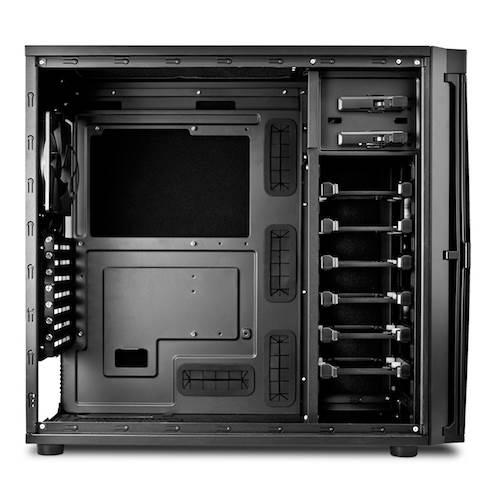

Linux File Server
2020-09-06
A few months ago I rebuilt my file server using an Antec P100 case and the guts of a Lenovo S30. I had to do a bit of rewiring and soldering on the power switch to get it working.

I used a 120GB SSD for the OS drive and 7 spinning SATA drives of various sizes for data. Keep in mind none of the drives are in any kind of raid array.
At the time I chose Linux Mint XFCE as my OS for this project.
Most of the files on the drives are from when I was a Windows user. Since I've fully switched to using Linux as my only operating system most of the backed up data is irrelevant.
On top of that its been a long time since I've sorted any of the files on this server. So I decided it was time to do an inventory and purge of the system. This is the digital equivalent of cleaning out the garage.
I've pulled all the drives out of the server, except for the OS SSD, and I'm going through each one. Taking my copying what I want to keep to my NextCloud server. Deleting what I don't need. Then organizing the rest in preparation for the next version of the server.
I am planning on using POP OS as the OS going forward. I will set up auto-mounting for all the drives on boot. As well as configuring a static IP, SSH, and Samba for file sharing.
Once complete the server will act like a simple NAS.
Cleaning up the files is a long tedious process of reviewing, copying, sorting, and deleting. If all goes well this process should free up a lot of storage space. While giving me a better organized collection of files.
I'll be happy when its done.